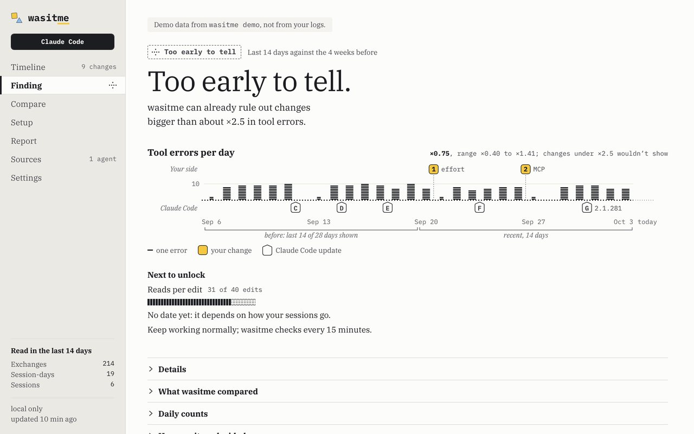
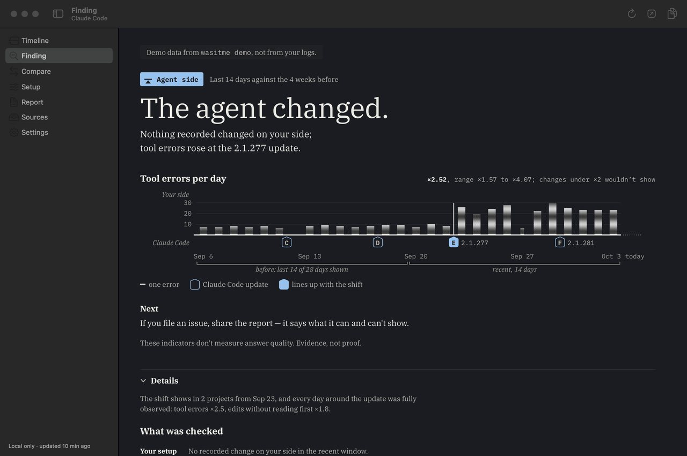
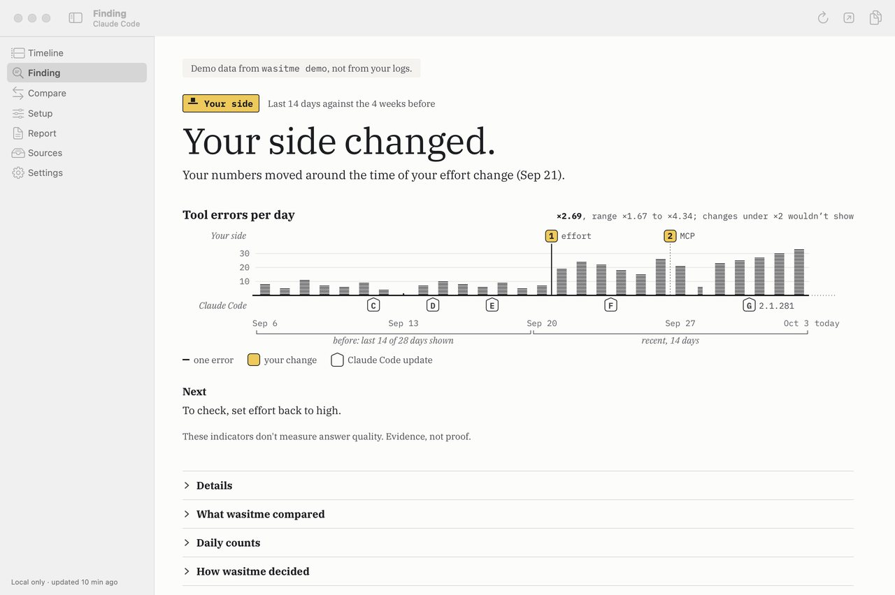
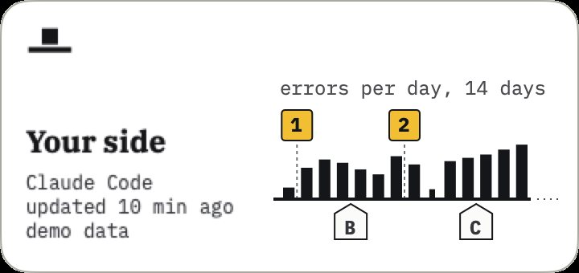
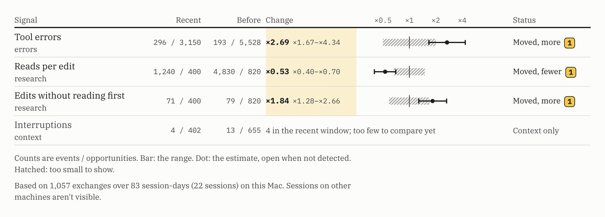

Every product shot in the film is wasitme running its own demo data, not anyone’s logs.
Read the film as text
The film is silent and runs 42 seconds. Every product shot in it carries a “Demo data” label.
- 0:00Cold open. A hairline draws across a dark frame: the case line. The complaint lands below it, on the agent’s side, and the doubt above it, on your side. On screen: “Your agent feels worse this week.” “Or did you change something?”
- 0:04The question. The question, large, with a yellow underline under “me”. On screen: “Was it me, or the model?”
- 0:07The case line. The line becomes the case line of the demo, day by day. Claude Code’s updates hang below it as lettered blue tags; your two changes sit above it as yellow squares, 1 (effort, Sep 21) and 2 (an MCP server, Sep 27); the tool errors for each day rise between them, higher after change 1. The engine’s sentence for the case appears, then the Control Center’s own chart of the same days. On screen: “The agent’s updates hang below the line.” “Your changes sit above it.” “Your numbers moved around the time of your effort change (Sep 21).”
- 0:15Your side changed. The Mac app’s Control Center window on the finding “Your side changed.” On screen: “Sometimes it’s your side.”
- 0:18The agent changed. The same window on the other answer, “The agent changed.”, moving to tag E at the 2.1.277 update. On screen: “Sometimes it’s the agent.”
- 0:22Too early to tell. The Control Center on “Too early to tell.” On screen: “When the evidence is thin,” “it says so.” “It names a side only when the evidence supports it.”
- 0:26Five answers. The five menu bar marks, one per answer, beside the menu bar popover. On screen: “Five answers, one line.” “Too early to tell” “No detectable change” “Can't tell which” “Your side” “Agent side”
- 0:30In the terminal. A terminal. The command types out, its real output prints, and the view moves in on the table of signals. On screen: “The same finding, in your terminal.”
wasitme demo --case you --lead finding - 0:33Local only. Three short lines on dark. On screen: “Reads your own logs.” “On your Mac.” “No network code.”
- 0:37End card. The wordmark and the tagline, then the license, the address and the small print. On screen: “Measure twice, blame once.” “Free and open source (MIT)” “github.com/draarivpatel-ui/wasitme” “wasitme is an independent project, not affiliated with or endorsed by Anthropic or OpenAI.” “Product shots: demo data from wasitme demo”
Read the film as text
The film is silent and runs 29 seconds. Every product shot in it carries a “Demo data” label.
- 0:00Cold open. A hairline draws across a dark frame: the case line. The complaint lands below it, on the agent’s side, and the doubt above it, on your side. On screen: “Your agent feels worse this week.” “Or did you change something?”
- 0:04The question. The question, large, with a yellow underline under “me”. On screen: “Was it me, or the model?”
- 0:07The case line. The line becomes the case line of the demo, day by day. Claude Code’s updates hang below it as lettered blue tags; your two changes sit above it as yellow squares, 1 (effort, Sep 21) and 2 (an MCP server, Sep 27); the tool errors for each day rise between them, higher after change 1. The engine’s sentence for the case appears, then the Control Center’s own chart of the same days. On screen: “The agent’s updates hang below the line.” “Your changes sit above it.” “Your numbers moved around the time of your effort change (Sep 21).”
- 0:12Your side changed. The Mac app’s Control Center window on the finding “Your side changed.” On screen: “Sometimes it’s your side.”
- 0:16The agent changed. The same window on the other answer, “The agent changed.”, moving to tag E at the 2.1.277 update. On screen: “Sometimes it’s the agent.”
- 0:19Too early to tell. The Control Center on “Too early to tell.” On screen: “When the evidence is thin,” “it says so.”
- 0:22Local only. Three short lines on dark. On screen: “Reads your own logs.” “On your Mac.” “No network code.”
- 0:25End card. The wordmark and the tagline, then the license, the address and the small print. On screen: “Measure twice, blame once.” “Free and open source (MIT)” “github.com/draarivpatel-ui/wasitme” “wasitme is an independent project, not affiliated with or endorsed by Anthropic or OpenAI.” “Product shots: demo data from wasitme demo”
Was it me, or the model?
Measure twice, blame once.
wasitme reads your own Claude Code and Codex session logs on your Mac. It keeps a timeline of what changed on your side and on the agent’s side, compares your recent weeks with the weeks before, and names a side only when the evidence supports it.
Install Read the code on GitHub
Free and open source under the MIT license. No network code. No account, no telemetry.
Two sides. One line.
When your agent starts to feel different, one of two things moved: your setup, or the agent. wasitme files every change on the side it came from, and draws the line between them on every screen.
Your side, above the line
Your changes are square stickers, numbered 1, 2, 3.
- The model you picked
- Effort and mode
- Instruction files
- MCP servers
- Skills, plugins and hooks
The agent’s side, below it
Its updates are pointed tags, lettered A, B, C.
- Version updates
- Which model was actually served
Five answers, the same on every screen
| Mark | You see | It means |
|---|---|---|
| Dashed rule, two specks | Too early to tell | Not enough data in both windows to compare yet. It says what it can already rule out, and what is missing. |
| Bare rule | No detectable change | It compared, and changes bigger than the stated size would have shown. |
| Square above, triangle below | Can’t tell which | Your numbers moved, but it can’t say which side. It gives the reason. |
| Square above the rule | Your side | Your numbers moved around the time of a change you made, and nothing recorded on the agent’s side explains it. |
| Triangle below the rule | Agent side | Nothing recorded changed on your side, and the agent’s side did: a different model served, or an update that shows in several projects. |
The answer goes on its side of the line.
Three cases from wasitme demo, run through the real engine. Each one is filed day by day: tool errors per day on the line, your changes above it, Claude Code’s updates below it. Then the finding lands where the evidence puts it.
Your side
Your side changed.
Your numbers moved around the time of your effort change (Sep 21).
Your side
Claude Code
- Sep 6: 8 errors in 231 tool calls
- Sep 7: 5 errors in 160 tool calls
- Sep 8: 11 errors in 290 tool calls
- Sep 9: 7 errors in 214 tool calls
- Sep 10: 6 errors in 188 tool calls
- Sep 11: 9 errors in 247 tool calls
- Sep 12: 4 errors in 121 tool calls; Claude Code update C: Claude Code 2.1.262 → 2.1.266
- Sep 13: 0 errors in 38 tool calls
- Sep 14: 7 errors in 205 tool calls
- Sep 15: 10 errors in 262 tool calls; Claude Code update D: Claude Code 2.1.266 → 2.1.270
- Sep 16: 8 errors in 230 tool calls
- Sep 17: 6 errors in 176 tool calls
- Sep 18: 9 errors in 219 tool calls; Claude Code update E: Claude Code 2.1.270 → 2.1.274
- Sep 19: 5 errors in 150 tool calls
- Sep 20: 7 errors in 201 tool calls
- Sep 21: 19 errors in 224 tool calls; your change 1: Effort high → medium, lines up with the shift
- Sep 22: 24 errors in 251 tool calls
- Sep 23: 22 errors in 230 tool calls
- Sep 24: 18 errors in 196 tool calls; Claude Code update F: Claude Code 2.1.274 → 2.1.277
- Sep 25: 15 errors in 171 tool calls
- Sep 26: 26 errors in 262 tool calls
- Sep 27: 21 errors in 228 tool calls; your change 2: MCP server added
- Sep 28: 6 errors in 64 tool calls
- Sep 29: 23 errors in 244 tool calls
- Sep 30: 25 errors in 259 tool calls
- Oct 1: 27 errors in 276 tool calls; Claude Code update G: Claude Code 2.1.277 → 2.1.281
- Oct 2: 30 errors in 296 tool calls
- Oct 3: 33 errors in 248 tool calls
wasitme demo --case you, drawn from the snapshot it prints. Based on 1,057 exchanges over 83 session-days (22 sessions) on this Mac. Sessions on other machines aren't visible.Your side
Claude Code
Agent side
The agent changed.
Nothing recorded changed on your side; tool errors rose at the 2.1.277 update.
- Sep 6: 7 errors in 206 tool calls
- Sep 7: 7 errors in 205 tool calls
- Sep 8: 8 errors in 229 tool calls
- Sep 9: 7 errors in 190 tool calls
- Sep 10: 8 errors in 215 tool calls
- Sep 11: 6 errors in 169 tool calls
- Sep 12: no sessions; Claude Code update C: Claude Code 2.1.262 → 2.1.266
- Sep 13: 8 errors in 225 tool calls
- Sep 14: 9 errors in 252 tool calls
- Sep 15: 8 errors in 242 tool calls
- Sep 16: 7 errors in 186 tool calls
- Sep 17: 8 errors in 222 tool calls
- Sep 18: 9 errors in 256 tool calls; Claude Code update D: Claude Code 2.1.266 → 2.1.274
- Sep 19: 9 errors in 266 tool calls
- Sep 20: 7 errors in 204 tool calls
- Sep 21: 10 errors in 290 tool calls
- Sep 22: 8 errors in 223 tool calls
- Sep 23: 26 errors in 243 tool calls; Claude Code update E: Claude Code 2.1.274 → 2.1.277, lines up with the shift
- Sep 24: 19 errors in 179 tool calls
- Sep 25: 24 errors in 232 tool calls
- Sep 26: 28 errors in 262 tool calls
- Sep 27: 6 errors in 58 tool calls
- Sep 28: 22 errors in 207 tool calls
- Sep 29: 30 errors in 286 tool calls
- Sep 30: 25 errors in 240 tool calls; Claude Code update F: Claude Code 2.1.277 → 2.1.281
- Oct 1: 23 errors in 219 tool calls
- Oct 2: 23 errors in 215 tool calls
- Oct 3: 23 errors in 222 tool calls
wasitme demo --case agent, drawn from the snapshot it prints. Based on 1,195 exchanges over 87 session-days (24 sessions) on this Mac. Sessions on other machines aren't visible.Too early to tell
Too early to tell.
wasitme can already rule out changes bigger than about ×2.5 in tool errors.
Your side
Claude Code
- Sep 6: 2 errors in 64 tool calls
- Sep 7: 8 errors in 227 tool calls
- Sep 8: 9 errors in 238 tool calls
- Sep 9: 9 errors in 237 tool calls
- Sep 10: 9 errors in 258 tool calls
- Sep 11: 10 errors in 274 tool calls
- Sep 12: no sessions; Claude Code update C: Claude Code 2.1.262 → 2.1.266
- Sep 13: 2 errors in 64 tool calls
- Sep 14: 9 errors in 242 tool calls
- Sep 15: 9 errors in 253 tool calls; Claude Code update D: Claude Code 2.1.266 → 2.1.270
- Sep 16: 10 errors in 277 tool calls
- Sep 17: 9 errors in 243 tool calls
- Sep 18: 7 errors in 208 tool calls; Claude Code update E: Claude Code 2.1.270 → 2.1.274
- Sep 19: 10 errors in 286 tool calls
- Sep 20: 7 errors in 266 tool calls
- Sep 21: 2 errors in 77 tool calls; your change 1: Effort high → medium
- Sep 22: 8 errors in 286 tool calls
- Sep 23: 6 errors in 235 tool calls
- Sep 24: 7 errors in 247 tool calls; Claude Code update F: Claude Code 2.1.274 → 2.1.277
- Sep 25: 8 errors in 288 tool calls
- Sep 26: 8 errors in 320 tool calls
- Sep 27: 2 errors in 77 tool calls; your change 2: MCP server added
- Sep 28: no sessions
- Sep 29: 8 errors in 308 tool calls
- Sep 30: 9 errors in 326 tool calls
- Oct 1: 9 errors in 323 tool calls; Claude Code update G: Claude Code 2.1.277 → 2.1.281
- Oct 2: 7 errors in 271 tool calls
- Oct 3: 7 errors in 266 tool calls
wasitme demo --case insufficient, drawn from the snapshot it prints. Based on 734 exchanges over 66 session-days (16 sessions) on this Mac. Sessions on other machines aren't visible.Too early to tell.
It is a common answer, and it is on purpose.
One person’s logs rarely hold enough data to separate a real change from noise, and wasitme would rather say so than invent a cause. A comparison needs your last 14 days against the 28 before them, and enough events, session-days and sessions in each.
Until then it tells you what it can already rule out, and counts what is still missing, as in “31 of 40 edits”. It doesn’t predict a date. The timeline works from day one.

wasitme demo. Demo data, not anyone’s logs.Wherever you look.
The same finding on the same line, on every surface. Everything here is the real Mac app or the real command line running on demo data, not a drawing of it.
-
Control Center
One window with seven pages: Timeline, Finding, Compare, Setup, Report, Sources and Settings.

Agent side, in dark mode. The filled tag E lines up with the shift. 
Your side. Sticker 1 is the effort change on Sep 21. -
Desktop panel
A small panel that stays on your desktop: the mark, the state and the latest change.

Demo data -
Claude Code
/wasitmeopens a pane. A status line shows the state and nothing else, and/wasitme:reportprints the numbers-only report into the conversation.wasitme: your side -
Codex
A skill:
$wasitme:reportprints the same report inside Codex. No hooks. -
Command line
wasitmefor the findings,wasitme statusfor one line,wasitme reportfor a shareable report in Markdown or HTML,wasitme demoto see it all on sample data.It draws the case line in text: your changes numbered above it, the agent’s lettered below, the daily counts under the days.
wasitme demo --case you --lead timeline wasitme Claude Code checked Oct 4, 14:14 ════════════════════════════════════════════════════════════════════════════════════════════════════ DEMO analytic demo data run through the engine; not your logs What changed yours numbered above the line, Claude Code's lettered below your side 1 2 ┄┄┄┄┄┄┄┄┄┬┄┄┄┄┄┄┄┄┄┄┄┬┄┄┄┄┄┄┄┄┄┄┄┴┄┄┄┄┄┄┄┄┄┄┄┬┄┄┄┄┄┄┄┄┄┄┄┴┄┄┄┄┄┄┄┄┄┄┄┄┄┄┄┬┄┄┄┄┄┄┄┄┄┄ Claude Code D E F G Sep 13 Sep 20 Sep 27 Oct 3 errors 0 7 10 8 6 9 5 7 19 24 22 18 15 26 21 6 23 25 27 30 33 tool calls 38 205 262 230 176 219 150 201 224 251 230 196 171 262 228 64 244 259 276 296 248 └───────── before ─────────┘└────────────────── recent, 14 days ───────────────────┘ D Sep 15 Claude Code 2.1.266 → 2.1.270 agent side · routine update E Sep 18 Claude Code 2.1.270 → 2.1.274 agent side · routine update 1 Sep 21 Effort high → medium your side · lines up with the shift F Sep 24 Claude Code 2.1.274 → 2.1.277 agent side · routine update 2 Sep 27 MCP server added your side G Oct 1 Claude Code 2.1.277 → 2.1.281 agent side · routine update Routine updates alone aren't evidence. Finding ■── Your side Your numbers moved around the time of your effort change (Sep 21). Tool errors (×2.7) and edits without reading first (×1.8) rose and reads per edit (×0.53) fell; nothing recorded changed on Claude Code's side in the same window. Based on 1,057 exchanges over 83 session-days (22 sessions) on this Mac. Sessions on other machines aren't visible. These indicators don't measure answer quality. Evidence, not proof. Signals recent before change range ×0.5 ×1 ×2 ×4 status ──────────────────────────────────────────────────────────────────────────────────────────────────── Tool errors 296 / 3,150 193 / 5,528 ×2.69 ×1.67–×4.34 ░░░░│░░├──●─┤ moved, more Reads per edit 1,240 / 400 4,830 / 820 ×0.53 ×0.40–×0.70 ├●─┤░│░░ moved, fewer Edits without 71 / 400 79 / 820 ×1.84 ×1.28–×2.66 ░░░│├──●─┤ moved, more reading first Interruptions 4 / 402 13 / 655 only 4 in the recent window context ○ estimate, not detected ● moved ├─┤ range ░ too small to show Next To check, set effort back to high. Share wasitme report --md | pbcopy numbers only: no prompts, code or paths
The real output of wasitme demo --case you --lead timeline, 100 columns wide. Demo data. Scroll it sideways to see every column.
The menu bar app, desktop panel and Control Center are for macOS. The command line also works on Linux.
How it decides.
Plain counts from your own logs, compared carefully. The whole method, every gate and every number behind it, is in METHOD.md.
Two windows
Your last 14 days against the 28 before them. Complete local days only: today is left out, because half a day is not a day.
Enough in each
At least 10 events, 10 session-days and 5 sessions in each window, and no single session supplying half. Short of that, the answer is Too early to tell.
Two kinds agree
Tool errors, reads per edit and edits without reading first are the indicators that vote. A change counts only when two different kinds move the same way and none moves the other way.
Then, both sides
It asks what else changed around that time: your model, effort, instruction files and MCP servers above the line, the agent’s versions and served model below it.
One side, or it says so
It names a side only when the recorded evidence points one way. Routine agent updates alone are never enough.

Interruptions and pushback are shown beside the indicators but never decide. Every finding ends the same way: These indicators don't measure answer quality. Evidence, not proof.
On synthetic users followed for 90 days with no real change on either side, none of 7,000 saw a false change or a false agent-side finding. Those users are made up: it shows the rules behave as designed, not that real logs behave the same way.
It reads your logs. It keeps the numbers.
No network code. Only the installer downloads, and only when you run it. No account, no telemetry.
Reads
Your Claude Code and Codex session logs, read-only. A short list of each agent’s configuration files, turned into counts and hashes. At the start of a Claude Code session, a few fixed-name files in that project, hashed and then dropped.
Keeps
Counts, durations, short allow-listed labels such as a version number, and salted hashes. Everything stays in one folder, ~/.wasitme, and the history outlives the logs.
Never
Never keeps prompt or reply text, tool input or output, code, file paths, project names or secrets. Never opens auth.json or .credentials.json. Never runs a hook, skill, MCP command or setting it finds.
One thing to know: anything you run inside Claude Code or Codex, such as /wasitme:report, becomes part of that conversation and is sent to Anthropic or OpenAI like any message. The report holds numbers only: no prompts, code or paths.
Exactly what is read and kept: PRIVACY.md. Threat model and how to report a problem: SECURITY.md.
Install.
One line. It needs Node.js 22 or newer, and it asks before each step.
curl -fsSL https://github.com/draarivpatel-ui/wasitme/releases/latest/download/install.sh | shThe release’s install.sh checks the download against the SHA-256 it carries. That catches a corrupted download, not a compromised source.
Or read it first
curl -fsSL -o install.sh https://github.com/draarivpatel-ui/wasitme/releases/latest/download/install.sh
less install.sh
sh install.sh --dry-run
sh install.sh--dry-run prints every command and file write and changes nothing.
- The engine and the
wasitmecommand - The menu bar app, built on your Mac from source and signed ad hoc (needs Swift 6 tools)
- A background scan every 15 minutes
- The Claude Code plugin, and a status line only if you have none
- The Codex skill
Each part is a separate yes or no. It never uses sudo. To remove it, run sh ~/.wasitme/current/scripts/uninstall.sh; your agent logs are never touched.